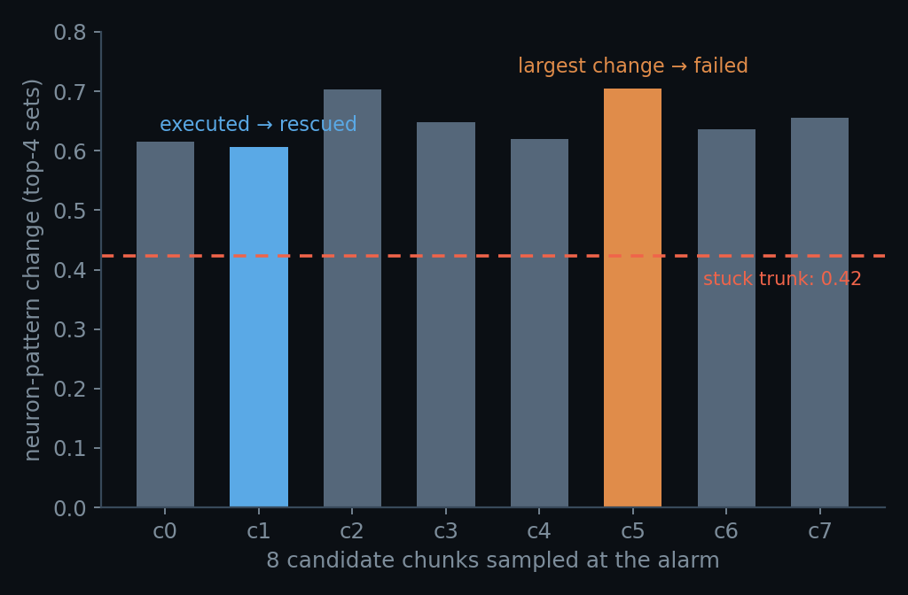

The neurons inside a VLA can see physical state the tokens never show
Something first seen in language models — a neuron's internal state holds information the tokens never show — carried over to a cooking robot, and grew a full sequel: the failure becomes visible, and rescuable.
This story starts with a different kind of model.
On reasoning LLMs we built a thing called NAD (Neuron Activation Distribution): while the model answers, record the activation distribution of tens of thousands of neurons — never reading what it wrote, only these internal states. The result: among many sampled answers to the same question, the neuron activity alone picks out the one more likely to be right. Confidence and hesitation are not written into the tokens, but the internal state carries them.
It left one question open: is this a quirk of language models, or a property of large models in general?
So we carried the same pair of eyes over to a cooking robot. Its "words" are not text but twenty joint actions per second; it too can "think wrong" — not a wrong answer, but an arm frozen mid-air, or shuttling between two pots until time runs out. The two rollouts below start from a bit-identical simulator state, run the same model, and differ in exactly one thing: the noise stream used for sampling. The left one puts both pots on the stove in 19 seconds. The right one struggles for the full 26, times out, and fails.
Whatever separates these two runs never appears in any token. The action stream keeps flowing, the trajectory keeps extending, and every frame looks like work being done. To tell them apart while they are still running, the output is the wrong place to look. You have to look inside the model.
Part one — what a trap looks like in the physical world
First, the failure itself. We sampled 32 rollouts from one initial state (again, only the noise differs): 14 succeed, 18 fail, with a 52-step budget. The failures are not random — they have shapes, mainly two:
- Stagnation — the arm hangs mid-air, nearly motionless, as if paused. Consecutive observation frames are almost identical.
- Looping — the arm shuttles between the two pots, returning to the same spot again and again. Plenty of path, zero progress.
The rest is a grab-bag of "still moving, but doing the wrong thing": pots lifted and dropped, placed and then dragged away. We rendered these trajectories frame by frame, together with the deep-layer routing, in an animation — the traps are easiest to see there.
And from the token side, three limits you cannot get around:
- The action stream won't tell you. A stuck model still emits a full, well-formed action chunk every step — ten numbers, right format, normal magnitudes. No error, no silence. The failure happens in the form of perfectly normal output.
- Length has two readings. A long trajectory might mean the problem is hard, or that the run is already stuck. The two call for opposite responses — wait it out versus cut it off — but the trace shows one symptom: long.
- The verdict comes at the finish line. The success predicate stamps only when the episode ends. By the time failure is "confirmed", the 26 seconds are spent and nothing can be done.
Part two — the neurons knew all along
This VLA is a Mixture-of-Experts model: inside certain layers, a small group of neurons acts as a dispatcher (the router), scoring 32 experts at every control step and lighting up the top 4 to handle that step. Which four are lit — we call that roster the pattern.
While the arm is working, the observation changes every step and the pattern reshuffles with it. The moment the arm stalls, the observation freezes — and the pattern freezes too: the same four neural pathways stay lit until the clock runs out.
So the detector can afford to be one sentence long: count how much the pattern changes
per step, divide by this rollout's own opening rate to get a dimensionless ratio
r(t), and fire when it spends three consecutive steps below
θ = 0.95. No learning, no calibration, four constants, all frozen in
advance.

The two corpora were collected independently (352 and 512 rollouts) and the threshold was set once. The false alarms deserve a look of their own: the 19 runs that alarmed and then succeeded have median length 48 steps against 39 overall — they really did stall, then walked out of it. So the alarm's semantics are "this run is stuck right now", not "this run is doomed". That distinction becomes important in part three.
Part three — an honest word about why it works
The first time we saw the deep-layer pattern freeze, we got excited too — until the control experiment made things soberingly plain:
Robot stuck → observation unchanged → router input unchanged → of course the experts don't change. The routing's stickiness correlates with the input's own stability at r = +0.93; regress the input out, and the routing metric collapses to chance.
The neurons are not an oracle. They are a free state sensor: they faithfully write "the physical world has stopped moving" into a log the model produces anyway.
Mundane is precisely why it is dependable — nothing mystical, so nothing fails mystically. And "free" is meant literally: expert selection is a by-product of the MoE forward pass; the model cannot run without making the choice, so reading it adds no inference and no probe. One counter-intuitive detail: which neurons are lit carries almost no outcome information — the static roster identifies the initial scene at nearly 100% accuracy yet is nearly useless about success. Identity is a fingerprint of the scene; change is the state. Our ratio is invariant to renumbering the experts, so it takes only the latter.
One more thinking — can it be rescued, live?
An alarm that only keeps score is a dashboard nobody reads. So the last experiment used it as a trigger: a fresh rollout runs online (threshold and all constants frozen beforehand), the alarm fires at step 32 — and at that exact step the full simulator state is saved and eight fresh noise streams are run out of it.

Three of the eight resamples succeed. A rollout that was headed for certain failure swapped its noise at the step the alarm pointed to, and finished the task in eight steps. Detection closed into intervention for the first time.
The limits were measured the same way, and none are hidden:
- Not every state is rescuable. Another initial state, same procedure: 0/8. Nothing in the alarm reading tells the two apart.
- The moment is not special. A control arm forked at a random earlier step also rescued 3/8. The alarm's value is knowing that it is time to act — not having found the perfect instant.
- The pattern cannot pick the winner. Choosing the candidate with the largest routing change failed; the rescue happened to be the smallest (n = 1, and the direction ran against intuition).
- No early warning. The median alarm lands at 54% of the horizon; before that, single-step readings are coin flips. It reads "already stuck", it does not prophesy "about to be".

The takeaway
A trajectory is what the model did. The pattern is what state it was in. The first gets stamped only at the finish line; the second says its piece halfway through — in a log the model writes at every step, that nobody had read. The gauge was on the whole time. We just finally looked at it.
The 50-second animated version: pattern — a short
film about routing · Every curve in this post is measured (Figs. 1–3 are drawn from
the 352/512-rollout corpora and the server's routing log); data and scripts live in
analysis_online_2026-08-29/ and analysis_triggered_fork/ ·
中文版